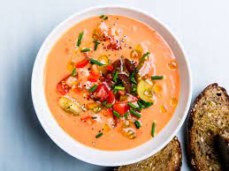

Gazpacho Soup

Description
This. Soup. Fucks. It's the best way to eat vegetbales in the summer. It's refreshing, it's light, and it has a delightful sweet heat. This isn't a traditional recipe. Most recipes will include sourdough bread pieces (Keep the bread on the side, of course). I omitted that to make the soup smoother. Most recipes don't include a jalpapeno. I like the additional heat. It's a unique side dish for a summer dinner that you'll want to make again and again.
Ingredients
- 3 lbs tomatoes
- 1 bunch green onions, rough chop
- 1 cucumber, sliced
- 2 jalapenos, sliced
- 1 green bell pepper, cored and sliced
- 5 garlic cloves
- 2 tbsp olive oil
- 2 tbsp sherry vinegar
- salt and pepper to taste
Steps
- Dice up your tomatoes and add them to the blender. Salt generously.
- Cut up your green onions, cucumber, jalapeno (deseeded if you want less heat), and bell pepper and add to the blender, salting generously between each vegetable.
- Add the garlic
- Add a few cracks of fresh pepper, the olive oil, and sherry vinegar.
- Blend until smooth.
- Chill.
- Eat it. Love it. Write me a thank you letter.